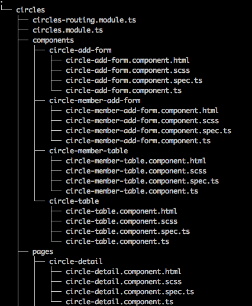
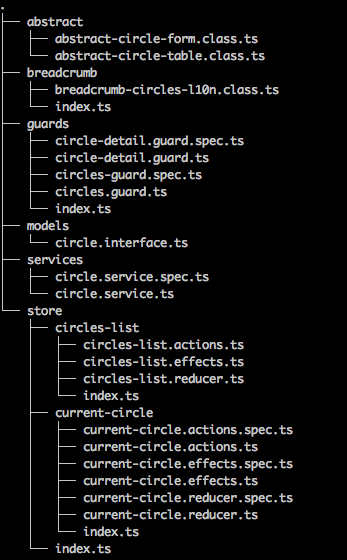

### Présentation Nouvelle Stack ## <img src="https://angular.schule/assets/img/angular.png" class="heartbeet"> <img src="https://hackr.io/tutorials/symfony/logo-symfony.svg?ver=1550189278" class="heartbeet"> mars 2019
<p> 1. IadNgxCore</p> <p class="fragment fade-up"> 2. Composants disponibles</p> <p class="fragment fade-up"> 3. NextStackDemo</p> <p class="fragment fade-up"> 4. Tests unitaires</p>
### 1. Commandes de base ``` // cloner le repo git clone git@github.com:IAD-INTERNATIONAL/IadNg2Intranet.git // install des deps npm i // lancer les Tests ng test // lancer le linter ng lint // réinstaller les libs et force le cache clean npm run reinstall // lancer l'extraction des clés de traduction npm run translate-extract // lancer le serve en dev npm run dev:serve ```
### Création de l'environnement de Dev ``` // copier l'environment.dev.ts cp src/environments/environment.dev.ts.dist src/environments/environment.dev.ts // compléter les informations des serveurs ```
### 1. Arborescence ## <img src="http://www.ijoomla.com/blog/wp-content/uploads/2012/04/messy-office-03-300x213.jpg"/>
### Dossier modules - Contient les différentes fonctionnalités métiers. 
### Dossier shared - Contient le code commun pour chaque module. 
### 2. Création des routes - Création du module de description des routes pour la fonctionnalité métier. - Ce module sera lazy-loadé dans le app-routing.module.ts.
### app-routing.module.ts ``` { path: 'backoffice', data: { breadcrumb: new BreadCrumb('backoffice', BreadCrumbCommonL10n.backoffice) }, children: [ { path: '', component: RedirectComponent, ...redirectToCdi('home', BreadCrumbCommonL10n.home) }, { path: 'circle', loadChildren: 'app/modules/circles/circles.module#CirclesModule' } ] } ```
### feature-routing.module.ts ``` { path: '', data: { breadcrumb: new BreadCrumb('circles', BreadCrumbCirclesL10n.circleManagement) }, children: [ { path: '', canActivate: [CirclesGuard], component: CircleHomeComponent }, { path: ':id', canActivate: [CircleDetailGuard], canActivateChild: [CircleDetailGuard], data: { breadcrumb: new BreadCrumb('root-circle', BreadCrumbCirclesL10n.currentCircle) }, children: [ { path: '', component: CircleDetailComponent }, { path: 'subcircle/:id', component: CircleDetailComponent, data: { breadcrumb: new BreadCrumb('sub-circle', BreadCrumbCirclesL10n.currentSubCircle) } } ] } ] } ```
### 3. L'état NgRx 1) Définir l'état de sa fonctionnalité métier ``` export interface CirclesListState { data: Array<Circle>; loading: boolean; error: string; deleteCircleError: boolean; addCircleFormReset: boolean; } const initialState: CirclesListState = { data: null, loading: false, error: '', deleteCircleError: false, addCircleFormReset: false }; ```
2) Définir les actions + payload ``` export enum CirclesListActionTypes { ADD_CIRCLE = 'ADD_CIRCLE', ADD_CIRCLE_SUCCESS = 'ADD_CIRCLE_SUCCESS', ADD_CIRCLE_ERROR = 'ADD_CIRCLE_ERROR' } export class AddCircleAction implements Action { readonly type = CirclesListActionTypes.ADD_CIRCLE; constructor(public payload: Circle) {} } export class AddCircleActionSuccess implements Action { readonly type = CirclesListActionTypes.ADD_CIRCLE_SUCCESS; constructor(public payload: any) {} } export class AddCircleActionError implements Action { readonly type = CirclesListActionTypes.ADD_CIRCLE_ERROR; constructor(public payload: any) {} } ```
3) Le reducer ``` switch (action.type) { case CirclesListActionTypes.ADD_CIRCLE: return updateCircle(state, { addCircleFormReset: false, loading: true }); case CirclesListActionTypes.ADD_CIRCLE_SUCCESS: return updateCircle(state, { loading: false, addCircleFormReset: true, data: [...state.data, action.payload] }); case CirclesListActionTypes.ADD_CIRCLE_ERROR: return updateCircle(state, { loading: false, error: action.payload }); default: return state; } ```
4) Les effects ``` @Effect() addCircle$: Observable<Action> = this.actions$.pipe( ofType(CirclesListActionTypes.ADD_CIRCLE), map((action: AddCircleAction) => action.payload), switchMap((payload: any) => { return this.circleService.createCircle(payload).pipe( switchMap((circle: Circle) => [ new AddCircleActionSuccess(circle), new ShowSnackbarAction({ message: this.translate.instant('circles.homeComponent.circleAdded'), action: null, config: { duration: 3000 } }) ]), catchError((err: any) => of(new AddCircleActionError(err))) ); }) ); ```
### 4. RxJS - Librairie pour la programmation réactive utilisant les Observables. ``` // From one or multiple values Observable.of('foo', 'bar'); // From array of values Observable.from([1,2,3]); // From an event Observable.fromEvent(document.querySelector('button'), 'click'); // From a Promise Observable.fromPromise(fetch('/users')); ```
- Souscrire à un Observable ``` // From array of values const src = Observable.from([1,2,3]); src.subscribe( (value: number) => console.log(`number : ${value}`); ); ``` ``` import { filter, map } from 'rxjs/operators'; const squareOdd = of(1, 2, 3, 4, 5) .pipe( filter(n => n % 2 !== 0), map(n => n * n) ); // Subscribe to get values squareOdd.subscribe(x => console.log(x)); ```
- RxJS est complexe mais puissant - RxJS contient un grand nombre d'opérateurs - Documentations : https://www.learnrxjs.io/ https://rxjs-dev.firebaseapp.com/ http://rxmarbles.com/
### 5. Création des pages ``` // Génération du composant avec le ng-cli ng g c modules/circles/pages/circleHomeComponent ``` - S'abonner au store NgRx pour récupérer l'état de votre fonctionnalité métier.
#### Exemple de composant ``` export class CircleHomeComponent implements OnInit { // circles observable state circles$: Observable<Array<Circle>>; // All circles loading circlesLoading$: Observable<boolean>; // Reset circle form state addCircleFormReset$: Observable<boolean>; // display add form isDiplayAddForm: boolean; constructor(private circleStore: Store<CirclesListState>, private router: Router, private route: ActivatedRoute) {} ngOnInit(): void { this.getCirclesState(); } /** * Get circles state properties from the store */ getCirclesState(): void { this.circlesLoading$ = this.circleStore.pipe(select(getAllCirclesLoading)); this.circles$ = this.circleStore.pipe( select(getAllCircles), skipUntil(this.circlesLoading$.pipe(filter((loading: boolean) => !loading))) ); this.addCircleFormReset$ = this.circleStore.pipe(select(getAddCircleFormReset)); } ```
### 6. Création des composants stateless - Les composants 'Dumb' prennent des paramètres en entréees via le décorator @Input et peuvent émettre des Event Emitter via @Output. ``` // Génération du composant avec le ng-cli ng g c modules/circles/components/circleAddFormComponent ```
#### Exemple de composant ``` export class CircleMemberAddFormComponent extends AbstractCircleForm<CircleCollaborator> implements OnInit, OnDestroy { // searched agents @Input() searchedMembers: Array<User>; @Input() searchedMembersLoading: boolean; // agent searched by name @Output() memberName: EventEmitter<string> = new EventEmitter(); // member idPeople selected via autocomplete memblerIdPeopleSelected: number; // rxjs subscription nameSubcription: Subscription; constructor(protected fb: FormBuilder, protected translate: TranslateService) { super(fb, translate); } ngOnInit(): void { this.searchedMembersLoading = false; this.nameSubcription = this.form .get('name') .valueChanges.pipe( debounceTime(500), distinctUntilChanged(), filter((name: string) => !!name) ) .subscribe((name: string) => { !this.memblerIdPeopleSelected && this.memberName.emit(name); }); } ... } ```
### 7. Tests unitaires Angular propose 3 types de tests : - Unit - Integration - End to End
### 2 types retenues - Unit : A effectuer pour chaque composant, service, reducer, effect, ations, guard, resolver, directive. - End to End : A effectuer pour chaque fonctionnalité métier. Pour l'instant les tests E2E ne sont pas encore près dans notre stack.
#### Exemple de test unit (component class testing) ``` beforeEach(() => { TestBed.configureTestingModule({ // provide the component-under-test and dependent service providers: [ WelcomeComponent, { provide: UserService, useClass: MockUserService } ] }); // inject both the component and the dependent service. comp = TestBed.get(WelcomeComponent); userService = TestBed.get(UserService); }); it('should not have welcome message after construction', () => { expect(comp.welcome).toBeUndefined(); }); it('should welcome logged in user after Angular calls ngOnInit', () => { comp.ngOnInit(); expect(comp.welcome).toContain(userService.user.name); }); it('should ask user to log in if not logged in after ngOnInit', () => { userService.isLoggedIn = false; comp.ngOnInit(); expect(comp.welcome).not.toContain(userService.user.name); expect(comp.welcome).toContain('log in'); }); ```
##### Les tests liés au DOM seront effectués dans les tests E2E Documentation officielle : https://angular.io/guide/testing#component-class-testing
## Questions ?